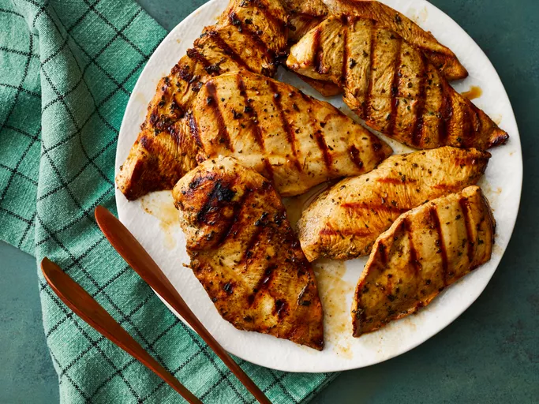

Grilled Chicken Marinade

Description
This chicken marinade is the best marinade I know for grilled chicken! It is so flavorful and easy to prep with three main ingredients and simple seasonings. Perfect for any summer occasion!
Ingredients
- 2 tablespoons vegetable oil
- 3 tablespoons chopped green onion
- 1 clove garlic, minced
- 6 dried whole red chilies
- 1 strip orange zest
- ½ cup white sugar
- ¼ cup soy sauce
- 3 tablespoons chicken broth
- 2 tablespoons peanut oil
- 1 tablespoon rice vinegar
- 2 teaspoons sesame oil
- ¼ teaspoon ground ginger
- 2 teaspoons cornstarch
- ¼ cup water
Steps
- Gather all ingredients.
-
Whisk vinegar, soy sauce, olive oil, parsley, basil, oregano, garlic powder, and black pepper together in a bowl.
- Pour into a resealable plastic bag. Add chicken, coat with the marinade, squeeze out excess air, and seal the bag. Marinate in the refrigerator, 2 to 4 hours.
- Preheat grill for medium-low heat and lightly oil the grate. Drain and discard marinade.
- Grill chicken on the preheated grill until no longer pink in the center, 4 to 5 minutes per side. An instant-read thermometer inserted into the center should read at least 165 degrees F (74 degrees C).
- This chicken marinade is the best marinade I know for grilled chicken! It is so flavorful and easy to prep with three main ingredients and simple seasonings. Perfect for any summer occasion!
Home